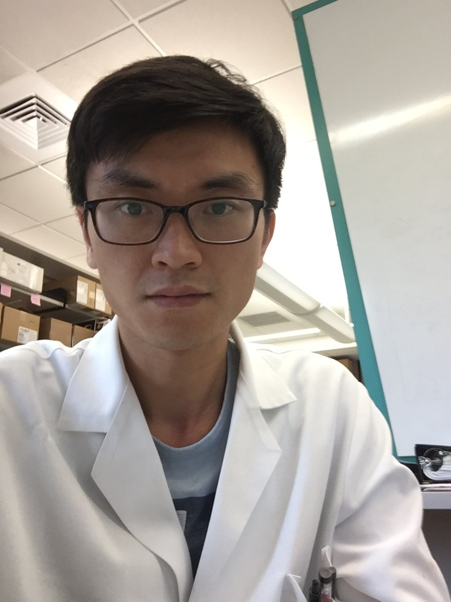
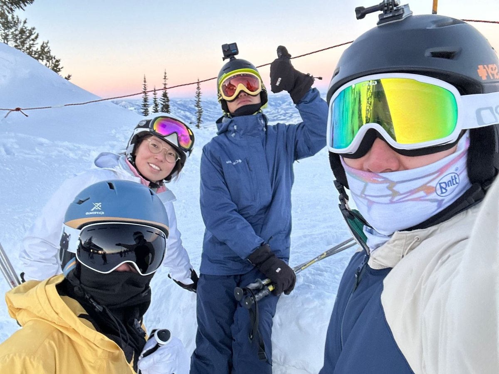
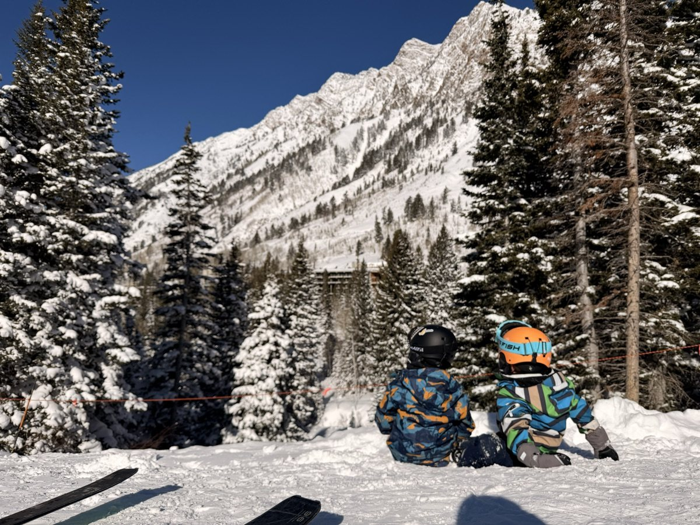

AI in the lab, for real
What actually changes when a research team adopts agents: the wins, the failure modes, and the habits that keep results reproducible.
Cancer biology, AI building & stories
I turn multimodal biological and clinical data into AI models that identify the therapeutic targets that matter and predict how tumours respond to treatment. I also build software that helps people and teams stay aligned around shared context, knowledge, and goals, tools designed to last, evolve, and become more useful over time.
From the real world to the terminal, and back again
I'm a research scientist at the Huntsman Cancer Institute, University of Utah, where I lead computational biology on multimodal sequencing studies of fusion-driven sarcomas. My path started in veterinary medicine, ran through a Ph.D. in molecular biology and years of bench work on how cancers rewire cells, and led me to build the computational systems that make sense of what we measure.
I care about ideas that survive contact with real patients and real labs: analyses others can rerun, tools teams keep using, and models that change which experiment we run next. I love sharing what I learn and introducing people who should know each other.
Li



From tissue and single cells to treatment response
I use mouse models to follow how tumours grow, change, and respond to treatment. I bring together imaging, pathology, single-cell and spatial data, and molecular profiling to build AI models that identify critical targets and predict drug response.
The goal is simple: test better ideas earlier and more precisely: what to target, which drug to use, and when resistance may emerge.
Mapping the spatial tumour microenvironment: where tumour, immune and stromal cells meet, and how those neighbourhoods shift under treatment.
Reading tumors cell by cell: heterogeneity, immune context and response signatures.
Mechanism first: how fusion oncoproteins rewire chromatin and where drugs can push back.
How synovial sarcoma activates GBAF at polycomb targets and loses CBAF enhancers, and how BRD9 degraders and DNA demethylating agents push back.
Enhancer loops organized around hexameric VCP/p97 in alveolar soft part sarcoma, a structural route to new drug targets.
The clear cell sarcoma transcriptome, mapped in human tumors and a mouse genetic model.
Single-cell correlative analysis of tumor and immune response in phase 2 trials for metastatic pancreatic cancer.
Tools that endure, improve over time and compound
Everyone on a research team briefs their own AI from scratch. LabWeaver gives the whole lab one shared memory: skills, protocols and instruments woven into infrastructure that compounds. It turns single-user coding agents into a multi-user hub where every finished analysis becomes a reusable skill.
My independent practice as an AI builder. A demo proves an idea once; a durable tool proves it every day. I design products that remember what they learn, get better with use, and become more valuable the longer people rely on them.
Recurring analyses packaged as auditable AI-agent skills that run the same way every time: ChIP-seq and ATAC-seq, single-cell RNA-seq, fusion transcript quantification, DESeq2 and GEO submission on HPC.
Papers, preprints and work in progress
* equal contribution. Sixteen peer-reviewed papers in total, including Nature Communications, JCI, Cancer Discovery, PNAS and JCO Precision Oncology.
Notes on science, tools and the people who make them work
What actually changes when a research team adopts agents: the wins, the failure modes, and the habits that keep results reproducible.
Lessons from building tools that improve with use, and from shipping alone without cutting the corners that matter.
Career pivots, the mentors who opened doors, and what each field taught me about the next one.
Stories of collaborations that started with an introduction, and the small habits that turn strangers into teammates.
Why sarcoma research matters, told through the questions patients and clinicians bring to the lab.
Good science is a team sport, and so is good software. My best work has come from generous collaboration: sharing data, code and credit, and building systems that help a whole team move faster. If our interests overlap, I'd love to hear from you.
Drug screen design, multimodal response modeling, and single-cell and epigenomic analysis for sarcoma and beyond.
Agentic infrastructure, shared memory and reusable skills that make a lab's analyses reproducible and its knowledge last.
Talks, workshops and gatherings that connect biologists, clinicians and builders around meaningful work.
A question, a dataset or an idea? Write to me.
I'm open to research collaborations, advising on AI for science, and speaking. I read every message.